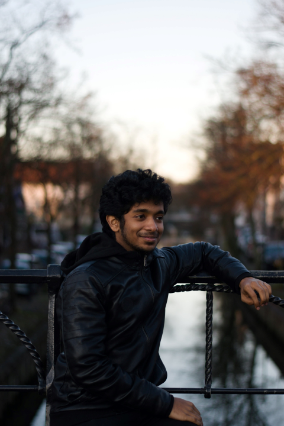

Designer by day, artist by night, a perpetual
work in progress
I’m an interaction design student in my final year, with a love for user experience and end-to-end product design and management. I have developed a strong sense of systems design thinking, storytelling and communication skills, and a passion for design strategy. I believe that looking deeper into details matter because the finest of details can be all the difference between a seamless and frustrating experience.
I am excited by new technology: blockchain, big data, AI, augmented reality; and the immense potential they have to change the way we interact with the world. I sometimes dabble in other fields of design and art like data visualizations, data art, and music, ever expanding my bench. I enjoy listening to and playing music, telling stories through the medium of dance, and having endless discussions with anyone about most things under the stars.
Currently reading The Trial and listening to Soul (my curated playlist)
work in progress
I’m an interaction design student in my final year, with a love for user experience and end-to-end product design and management. I have developed a strong sense of systems design thinking, storytelling and communication skills, and a passion for design strategy. I believe that looking deeper into details matter because the finest of details can be all the difference between a seamless and frustrating experience.
I am excited by new technology: blockchain, big data, AI, augmented reality; and the immense potential they have to change the way we interact with the world. I sometimes dabble in other fields of design and art like data visualizations, data art, and music, ever expanding my bench. I enjoy listening to and playing music, telling stories through the medium of dance, and having endless discussions with anyone about most things under the stars.
Currently reading The Trial and listening to Soul (my curated playlist)